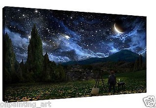

HTML5 Canvas
1.什么是Canvas
<canvas>标签定义图形，比如图表和其他图像，必须使用脚本来绘制图形
在画布上<Canvas>画一个
2.创建一个画布<Canvas>
<canvas id="myCanvas" width="200" height="100" style="border:1px solid #000000;"></canvas>
3.使用JavaScript来绘制图像
<script>
// 找到canvas元素
var c = document.getElementById("myJsCanvas");
// 创建 context 对象：
var ctx = c.getContext("2d");
// fillStyle 默认设置是#000000（黑色）
ctx.fillStyle = "#FF0000";
// fillRect(x,y,width,height) 方法
ctx.fillRect(0,0,150,75);
</script>
4.Canvas-矩形
<script>
// 找到canvas元素
var c = document.getElementById("myCanvasLine");
// 创建 context 对象
var ctx = c.getContext("2d");
// 定义线条开始坐标
ctx.moveTo(0,0);
// 定义线条结束坐标
ctx.lineTo(200,200);
// 开始画
ctx.stroke();
</script>
5.Canvas-圆形
<script>
// 找到canvas元素
var c = document.getElementById("myCanvasArc");
// 创建 context 对象
var ctx = c.getContext("2d");
// 重置当前的路径
ctx.beginPath();
// 绘制弧线(x, y, radius, startRad, endRad, anticlockwise=false)
ctx.arc(95,50,40,0,2*Math.PI);
ctx.stroke();
</script>
6.Canvas-文本
<script>
// 找到canvas元素
var c = document.getElementById("myCanvasText");
// 创建 context 对象
var ctx = c.getContext("2d");
// 设置字体
ctx.font = "30px Arial";
// 填充实体文本
ctx.fillText("Hello World",10,50);
// 设置字体
ctx.font="30px Arial";
// 填充空心字体
ctx.strokeText("Hello World",10,100);
</script>
7.Canvas-渐变
<script>
var c = document.getElementById("myCanvasGradualChange");
var ctx = c.getContext("2d");
// 创建渐变
// context.createLinearGradient(x0,y0,x1,y1),矩形填充
var grd=ctx.createLinearGradient(0,0,200,0);
// gradient.addColorStop(stop,color);
// stop 介于0.0与1.0之间的值
grd.addColorStop(0,"red");
grd.addColorStop(1,"white");
// 填充渐变
ctx.fillStyle=grd;
// context.fillRect(x,y,width,height),填充矩形
ctx.fillRect(10,10,150,80);
</script>
<script>
// 创建一个径向/圆渐变
var c = document.getElementById("myCanvasGradualChangeCircle");
var ctx=c.getContext("2d");
// 创建渐变
// context.createRadialGradient(x0,y0,r0,x1,y1,r1);
// x0,y0,r0是开始圆的x坐标，y坐标，半径；x1,y1,r1是结束圆的x坐标，y坐标，半径
var grd=ctx.createRadialGradient(75,50,5,90,60,100);
grd.addColorStop(0,"red");
grd.addColorStop(1,"white");
// 填充渐变
ctx.fillStyle=grd;
ctx.fillRect(10,10,150,80);
</script>
8.Canvas-图像
